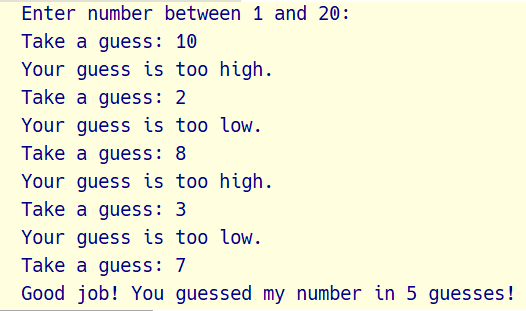
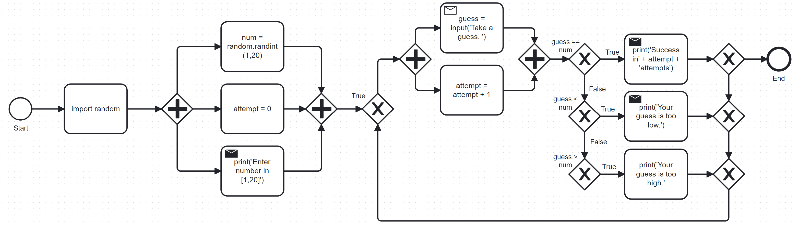

Short program: Guess the Number
- We're going to bring the last few topics together in a complete little game script. The same mechanics will be required for the "Rock, Paper, Scissors" home programming assignment
- This example also demonstrates an exemplary solution path:
- Understand what's asked from you (requirements)
- Understand what the program needs from you (input)
- Understand what's the result supposed to look like (output)
- Write the process as pseudocode (without syntax)
- Create a process diagram (with commands)
- Code the Python program (source code)
- Run, test and debug the source code
- Fix pseudocode/diagram accordingly.
- Identify extensions.
- Implement extensions (repeat steps 4-8).
Write a 'Guess the number' game. When you run the program, the output should look like this:

Figure 1: Desired output of guessTheNumber.py
- The program should generate a random number between 1 and 20.
- Enter the source code into the IDLE file editor, or into Colab, and
save as
guessTheNumber.py. - Solution path/pseudocode (code highlighted)
importrandommodule.- Generate a
randomnumber. - Store number in
num. - Set
attempt(number of guesses) to 0. - Get
inputnumberguessfrom user. - Increase
attemptby 1 - Check if
guessis the same asnum - Print success message and
attemptvalue - End program
- Otherwise, check if
guessis smaller thannum - Print information
- Otherwise, check if
guessis larger thannum - Print information
- Return to step 3
BPMN Process diagram:

Figure 2: Flow diagram for guessTheNumber.py
Solution Python code (16 + 5 lines):
# import random module import random # pick random number between 1 and 20 num = random.randint(1,20) # set attempts counter to 0 attempt = 0 # ask user for number guess print('Enter number between 1 and 20: ') # infinite loop until number is guessed while True: guess = int(input('Take a guess: ')) attempt = attempt + 1 if guess < num: print('Your guess is too low.') continue elif guess > num: print('Your guess is too high.') continue else: print('Good job! You guessed my number in ' + str(attempt) + ' guesses!') break
- Program extensions:
- Make program safe against no/wrong input (exception handling): currently, it terminates with an error if a floating-point number or a letter or nothing is entered by mistake.
- Exchange the infinite
whileloop by aforloop with a set number of allowed guesses (most games don't go on forever).
- What did you learn?
- For best productivity and learning, follow a solution path - don't just "code away"
- For best learning effects find different solutions to the same problem.
- For best results, handle exceptions. Balance exception handling with usability and performance.
- There is always more than one solution, usually many. There is no best solution to a programming problem that satisfies all requirements, even the unspoken ones, equally well.